提起东南亚，你的脑海中或许会浮现这样的画面：熙熙攘攘的狭窄街道、世界各地的游客、卖各种吃的玩的小摊贩，街道两旁鳞次栉比的店铺……当然少不了——穿梭在道路上如过江之鲫的摩托车。
东南亚人多，摩托车也多
（图：shutterstock）▼
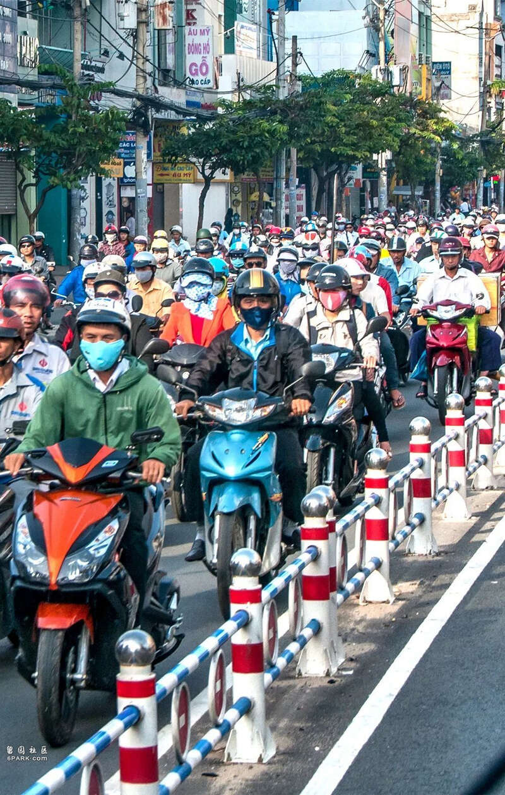
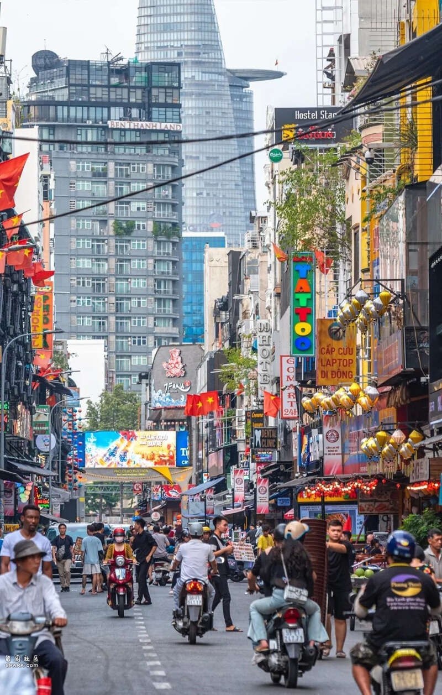
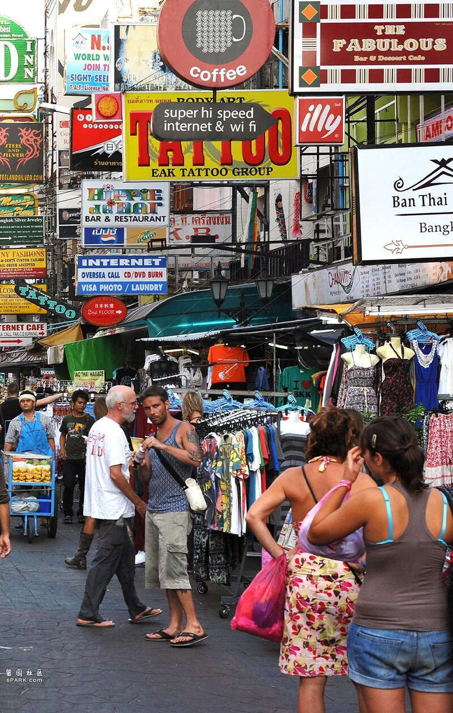
人口不足1亿的越南，摩托车保有量高达4500万辆，几乎每两人就有1辆。印尼、泰国、马来西亚等国家的摩托车保有量也非常恐怖。可以说，东南亚就是摩托车的王国。
先来点小小的震撼
（图：shutterstock）▼
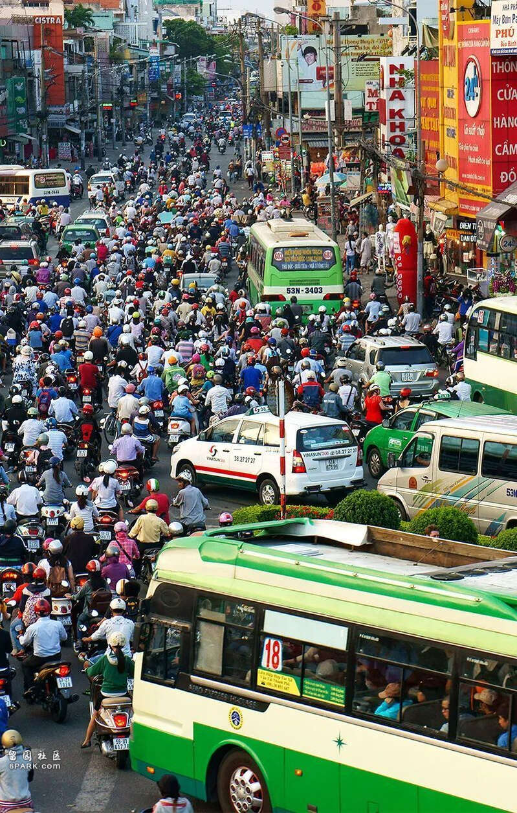
然而近年来，国产“小电驴”却在这个摩托车王国中杀出了一片天地。
日系摩托车的大本营
与汽车市场类似，东南亚的摩托车市场同样是由日系品牌统治。以越南为例，本田、雅马哈、铃木等日系摩托车在当地销量占比超九成。日系摩托车之所以能够占领东南亚市场，背后有着多重因素。
首先，日系摩托车企业在东南亚已深耕多年，纷纷在当地建厂，生产符合当地国情的产品。本田早在1965年就在泰国建立了摩托车工厂，雅马哈在印尼的工厂则建于1974年。在东南亚建厂可谓是好处多多，既降低了生产成本，又能利用东盟关税优惠，出口到其他东南亚国家。
▼
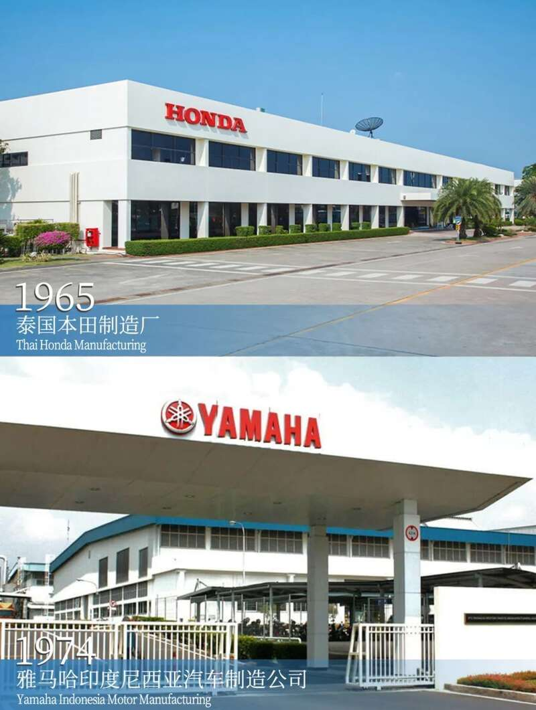
其次，日系品牌摩托车的产品力在东南亚市场很能打。日系摩托车凭借着性价比高、皮实耐用、省油、维修保养方便且花费较少的优势，已成功在东南亚消费者心目中建立品牌心智。他们购买摩托车，会优先选择日系品牌。
此外，日企出海擅长“抱团”，常常是一整条产业链上节点的日本企业都会在当地建厂，如日本制铁、住友化学、爱信、电装等等。这就使得日系品牌摩托车在东南亚当地维修保养非常方便，费用也更低。
泰国某雅马哈摩托车授权车间和销售中心
（图：shutterstock）▼
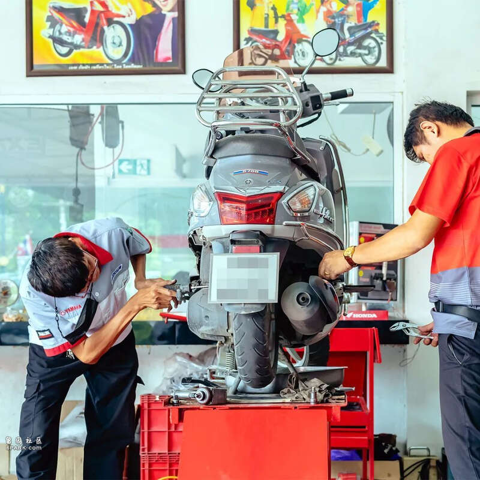
不过，日系摩托车企业多少也和日系车企一样，有点“船大难掉头”，在两轮车电气化、智能化的道路上转型偏慢。日系摩托车企业仍以传统燃油摩托车为主力，推出的电动两轮车产品数量少、价格高。
以本田推出的电动踏板摩托车EM1 e:为例：这款电动摩托车续航仅有约41公里（官网数据），配备了功率1.4千瓦、扭矩90牛·米的电动机，在印尼市场售价约4000万印尼盾，约合人民币1.8万元、2600美元……而本田规格类似的燃油踏板摩托车，价格只有EM1 e:不到一半。
对东南亚消费者来说
便宜又好拉的车就是好车
（图：shutterstock）▼
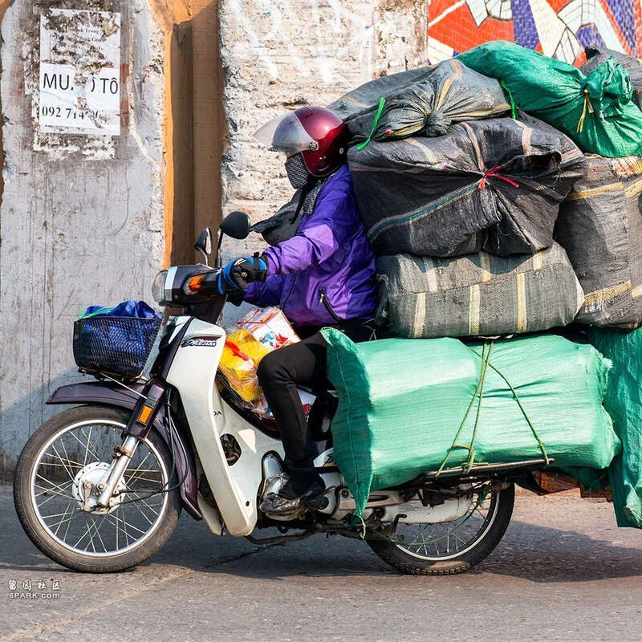
你要是东南亚国家的消费者，想买一台价廉物美的小踏板摩托车，会选择本田EM1 e:吗？电动两轮车的市场高地，日本摩托车企业并没能占领，这就给我国电动两轮车企业以巨大的商机。
目标，东南亚！
早在2019年，雅迪就出海东南亚，在越南建立了第一家海外工厂。今年5月份，雅迪又在印尼开工兴建一家新厂，预计投资超过1.5亿美元。
国内电动两轮车的另一家大厂爱玛，在印尼的生产基地于今年3月份正式投产。其他诸如小牛、九号等品牌，或与当地与合作伙伴建立销售渠道，或直接自己搞线上与线下。
爱玛在印尼的生产基地
（图：tiktok@aima_global）▼

那么，为什么是东南亚？这里前有占统治市场多年的日系摩托车品牌，后有如越南本土的VinFast这样的后起之秀。中国电动两轮车品牌想在东南亚闯出一片天地，绝非易事。
值得一提的是
越南VinFast不仅有电摩，还有电动汽车
（图：VinFast）▼
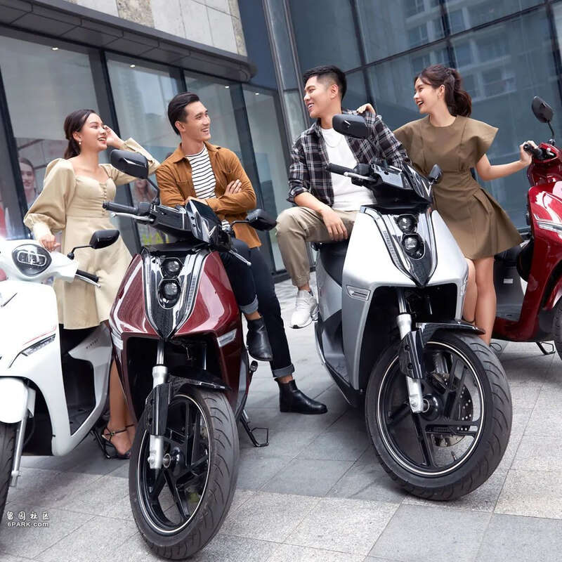
这是因为，东南亚国家较低的人均GDP水平，为两轮代步车提供了得天独厚的生存土壤。
印尼2023年的人均GDP约5100美元。泰国收入水平略高，约为7300美元。马来西亚要更高一些，约1.2万美元，与中国差不多，已经是仅次于新加坡和文莱的富国了。而越南则只有约4300美元。至于柬埔寨、老挝、缅甸、菲律宾等国，就更低了。
一提到东南亚，估计很多人都会联想到“穷”▼
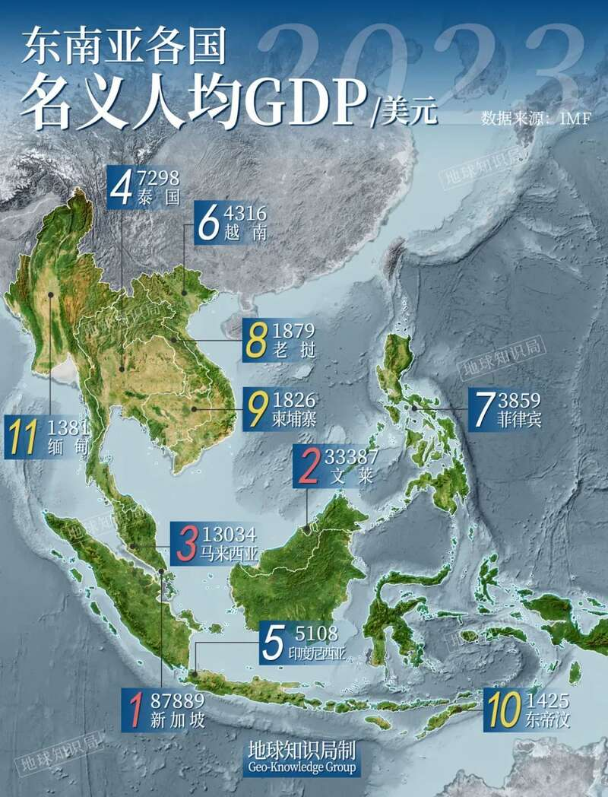
收入水平普遍较低的东南亚民众，选择摩托车作为出行代步工具就太正常不过了。以本田摩托为例，一辆两轮小踏板摩托车售价约2~3千万印尼盾，约合人民币9千到1.3万块钱不等。买一辆这样的小踏板摩托车，显然不需要攒太久的钱，比买汽车门槛低太多了。
另外，东南亚国家的基建水平较低，路况比较原始，公共交通也相当落后。因此在当地，摩托车成为居家旅行、外出工作必备的交通工具，甚至是重要的谋生工具。此外，两轮踏板摩托车油耗比较低，燃油成本对中低收入群体也更友好。
骑着我心爱的小摩托
它永远不会堵车~
（图：壹图网）▼
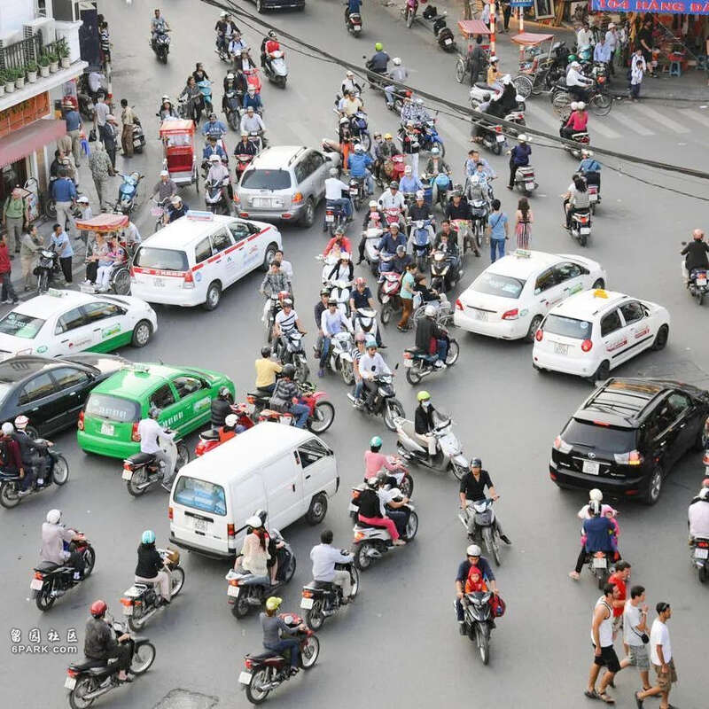
综合上述多重因素，造就了东南亚诸国堪称“海量”的摩托车保有量以及每年巨大的增量。
2023年，印尼市场卖出了超过600万辆摩托车，东南亚排名第一；排名第二、第三的越南和泰国也有将近300万与200万辆。整个东南亚2023年摩托车销量逼近1500万辆大关，并且还在保持增长。
但破局之道，就在其中。摩托车巨大的保有量，给东南亚各国造成了严重的碳排放与空气污染。越南首都河内、印尼首都雅加达等大城市遭遇严重空气污染的新闻，在网络上一搜一大把。
根据世界银行2021年的数据
河内800万辆注册车辆的排放量
占空气颗粒物污染的30%
（图：reuters）▼
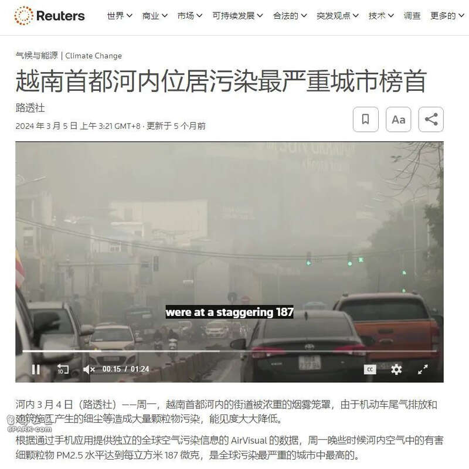
近年来，随着经济的不断增长，印尼、泰国、越南等国已逐步出台“油改电”政策，通过发放购车补贴等形式鼓励民众购买电动两轮车，渐进式地淘汰传统燃油摩托车。
2023年印尼政府出台补贴政策，即为购买电动两轮车的车主补贴700万印尼盾，约合人民币3200元。泰国则是从22年开始，每辆车补贴1.8万泰铢，约合人民币3600元。
通过购车补贴推动电动两轮车的大规模普及
（图：shutterstock）▼
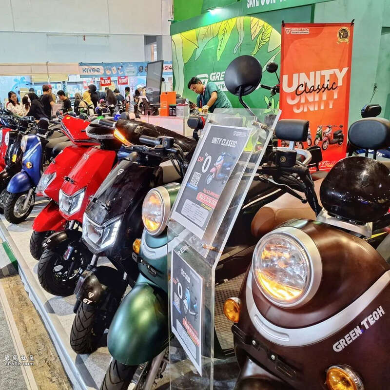
还有不容忽视的燃料费用，对于东南亚的中低收入者来说，每年给摩托车加油也是一笔不小的开销。
越南虽然收入水平不高，但油价一点也不便宜，汽油要将近0.9美元/升，泰国也要1美元/升左右。产油的印尼和马来西亚相对低一些，约0.6、0.4美元/升，也谈不上便宜。
掏钱加油时多少还是有点肉疼
（图：shutterstock）▼
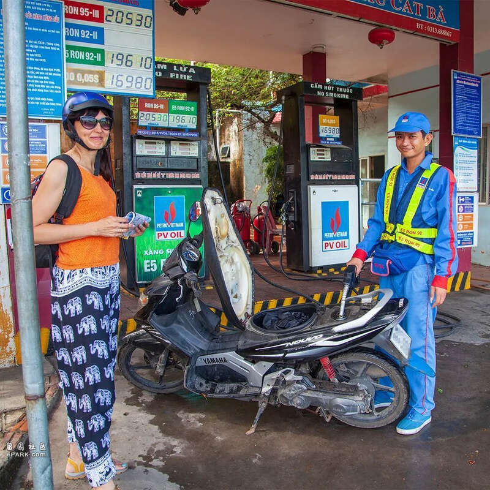
尽管摩托车油耗低，但一年到头开下来也要花不少钱。相比之下，电动两轮车充电就可便宜太多了，完全是降维打击。
以东南亚各国庞大的摩托车保有量和每年的增量，如果能逐步过渡到电动两轮车，将会诞生一个海阔凭鱼跃、天高任鸟飞的增量市场。这正是中国一众电动两轮车企业纷纷出海东南亚的原因。
万里长征的第一步
一个行业过度内卷，往往伴随着无止尽的价格战、成本战，如何破除内卷？答案就是出海，给产能向外找到市场，用国内市场卷出来的产品去海外市场降维打击、“给外国消费者亿点点中国震撼”。
中国电动两轮车企业在不少方面存在优势。得益于制造业大国的角色，中国电动两轮车产业链齐全而成熟，上下游企业能够支持技术快速迭代与强劲的产能供应。巨大的产能可以进一步摊薄生产成本，即使算上关税，售价也极具竞争力。
小小电动两轮车，拿捏
（图：壹图网）▼
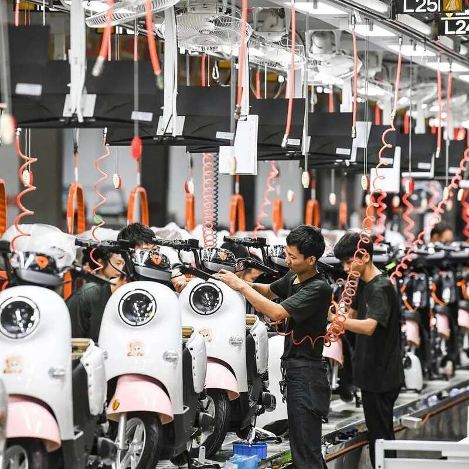
产品和技术迭代速度快，是中国电动两轮车企业的另一大法宝。雅迪、爱玛、九号、小牛这些企业已经在电动领域耕耘许久，在研发端投入了巨大的资源。相比之下，本田、雅马哈、铃木这些日系摩托车厂商还是“以油为主”，电动两轮车产品数量少且不够重视。
电动两轮车若要逐渐取代燃油摩托车，逐步提升渗透率，必须要满足东南亚在地消费者的使用习惯。东南亚用户通勤距离偏长，所以对车子的最高速度和续航里程都有较高的需求。
灵活轻便的摩托车
在东南亚是性价比绝佳的代步工具
（图：壹图网）▼
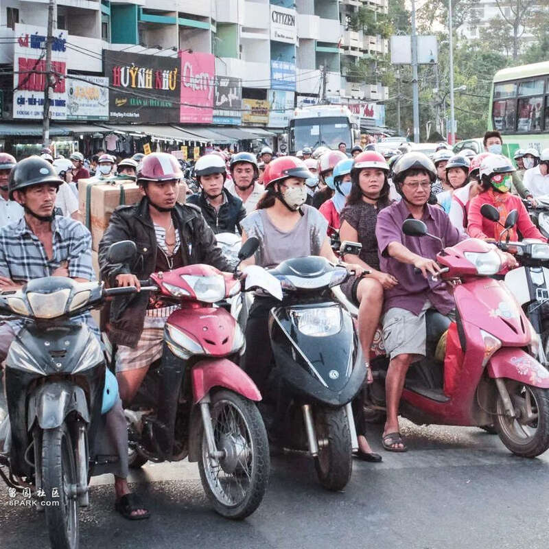
而中国电动两轮车企业在电机、电控和电池的技术力上占据了先机，雅迪、爱玛等企业纷纷推出了最高时速超过50公里/小时、续航里程超过100公里的两轮摩托车产品，售价也相当友善。
雅迪越南官网上，某款续航约150公里、最大速度50公里/小时的电动摩托车售价约2.3千万越南盾，约合人民币6582.87元，其规格已经相当接近价格类似的小排量本田踏板或弯梁摩托车了。
六千五的价格，你会选择电动还是油车呢
（图：YADEA）▼
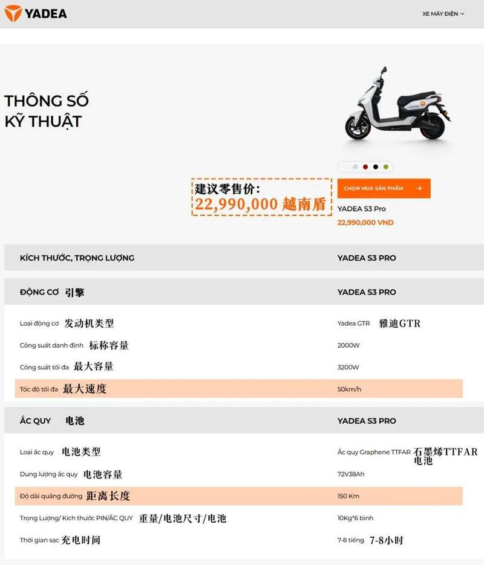
相比之下，雅马哈在越南市场销售的电动摩托车NEO’S售价则高达4.9千万越南盾，约合人民币1.4万元，而续航却只有72公里，是前者的一半左右，电机的最大功率也更低一些。
国产电动摩托车瞬间就香了
（图：YAMAHA）▼
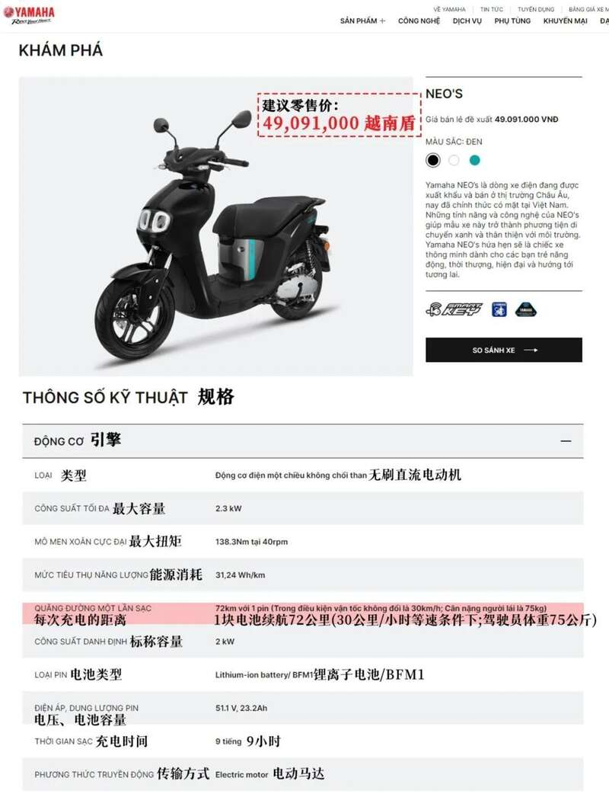
此外，中国电动两轮车在智能化上也更具优势。雅迪在越南推出的电摩支持手机APP/蓝牙解锁、远程控制、GPS定位/导航，以及电池监控等诸多功能，能为车主提供更佳的驾乘体验。
越南雅迪电摩的手机APP界面
（图：YADEA）▼
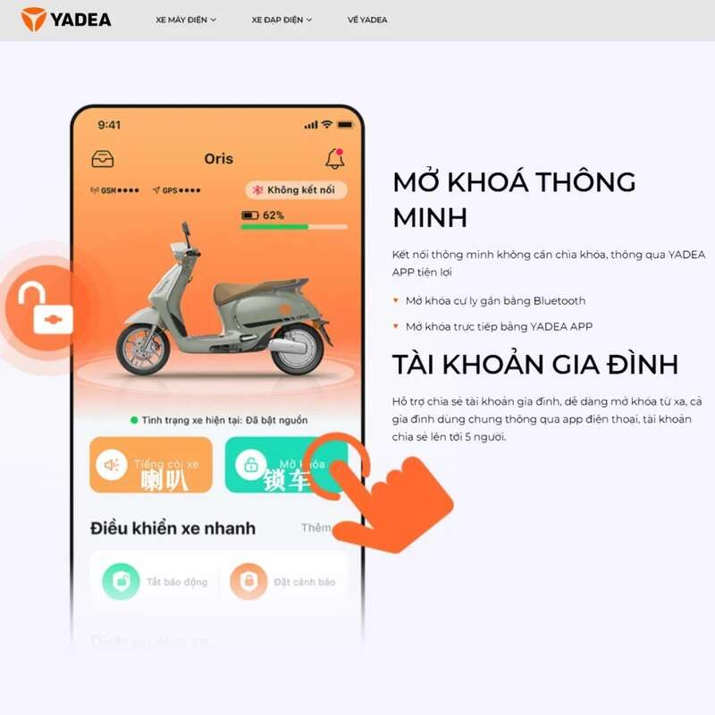
目前，我国电动两轮车企业已在东南亚这个前途广阔的市场站稳了脚跟，但面对本田、雅马哈，或是当地的本土品牌，这仍然只是万里长征的第一步。
我们切不可重蹈中国摩托车败走东南亚的覆辙——因价格战的内耗而降低产品的品质，最终失去了好不容易建立起来的口碑与市场。
在机遇与挑战并存的东南亚，雅迪、爱玛、绿源、台铃、新日、小牛、九号等一批过去十年在国内成功拼杀至今的电动两轮车企业，仍需力求更强的产品力、更完善的售后服务，从而撬动这一被日系摩托车品牌盘踞多年的巨大市场。